Definition of Automotive Wiring Harness
Wiring harnesses used in automobiles guide electric current to various parts of the car and play an important role in conveying the driver's intentions to the car and the outside.
In terms of the human body, the engine is like the heart, and the wiring harness is like the nervous system inside the car. It is a general term for connecting all electrical components.
Wiring Harness is a non-molded, flexible part with high plasticity.The actual loading status will be very different from the 3D digital model.
PSAWiring Harness is mainly divided into five categories:
Main Wiring Harness:Mainly distributed in the engine compartment and chassis, with a small amount in the cabin.
Cockpit Wiring Harness:Mainly distributed in the cabin.
Instrument Wiring Harness:distributed within the dashboard.
Engine Wiring Harness:distributed on the engine.
Small Wiring Harness:Left front door Wiring Harness, right front door Wiring Harness, rear door Wiring Harness, ceiling Wiring Harness, rear door Wiring Harness, antenna Wiring Harness, front bumper Wiring Harness, rear bumper Wiring Harness, positive cable, negative cable.
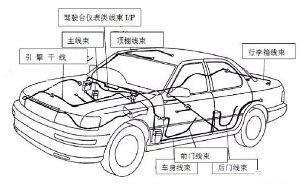
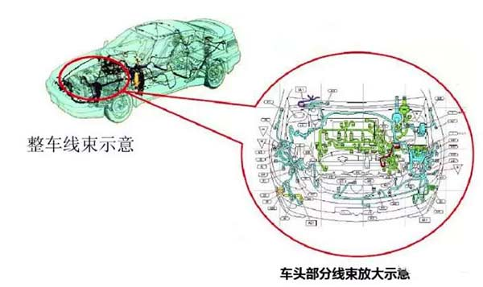
The composition of Automotive Wiring Harness:
Connectors, terminals, wires, positioning cards, coverings (Tape and tube), seals (Sealing plugs and plugs), electrical test label.
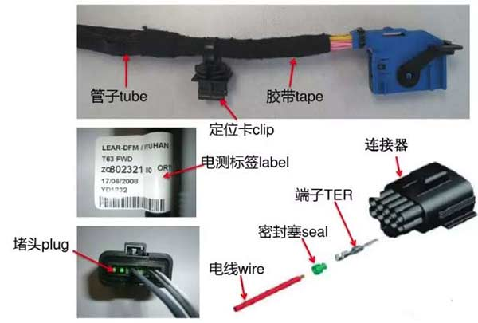
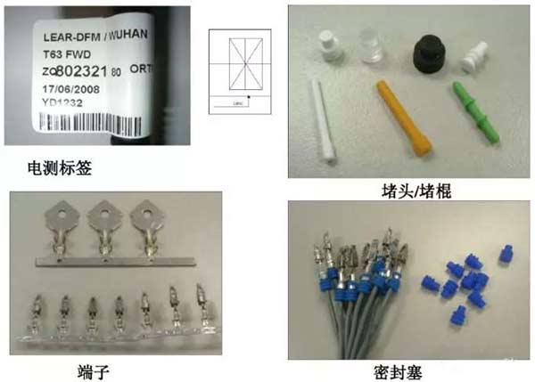
Wires, branches
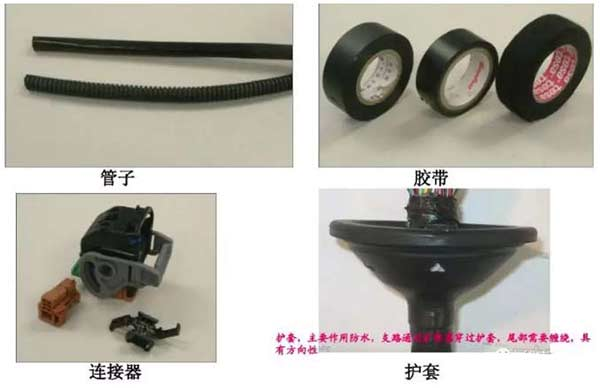
1、The wires are cut into terminals by a wire cutting machine and become branch circuits.(Single branch, crimped branch, articulated branch)
2、Wires are divided into different specifications, including 0.35, 0.5, 0.8, 1.0, 1.25, 2.0, 4.0, 6.0, 10.0, 15.0, 25.0, etc., commonly known as wire diameters. Wires of different wire diameters have different numbers of copper wire strands and outer diameters of insulation.The size of the wire diameter determines the thickness of the wire.
3、The color of wires: divided into black, brown, red, orange, yellow, green, blue, purple, gray, white, pink, etc.Each color also corresponds to the corresponding English abbreviation.
4、The wire types can be divided into: Class B, Class C, Class H, Class G, etc.According to different temperature resistance, it can be divided into T2, T3 and T4.
5、There is a special kind of wire called shielded wire, whose main function is to prevent interference.
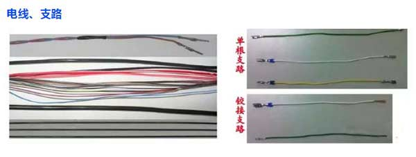
1、Ring terminals are special terminals that are usually fixed to the vehicle body with bolts.This type of terminal has special requirements.
2、Terminals are also divided into terminals without sealing plugs and terminals with sealing plugs.
3、Terminal crimping is divided into automatic crimping and manual crimping; manual crimping generally crimps sealing plug terminals and special terminals (hit terminals, ring ends, etc.).
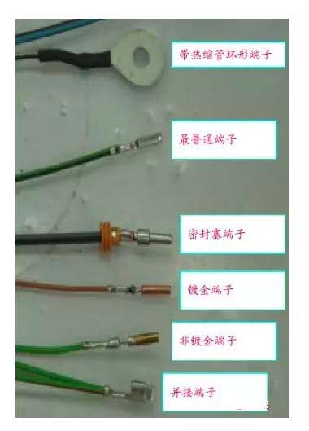
1. Main parameters of terminals:
1. The crimping height and width of the conductor; the crimping height and width of the insulation layer;
2. A pointed micrometer measures the width of the insulation layer; a vernier caliper measures the height and width of the conductor and the height of the insulation layer.
2. An important characteristic of the terminal is the tensile force value. The crimping state of the terminal must meet the tensile force value requirements.Use a pull tester to measure the pull force value of the terminal.
3. Any part of the terminal that does not meet the requirements, such as no brush, no window, too large bell mouth, etc., is a terminal deformation.
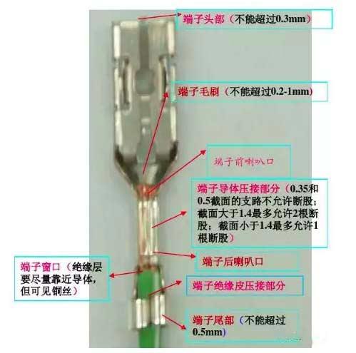
There are many types of connectors, which can be divided into two categories: waterproof and non-waterproof according to different requirements.
The connector must be locked by docking to achieve its function.
Materials related to connectors include locking pieces, covers, positioning clips, cable ties, etc.
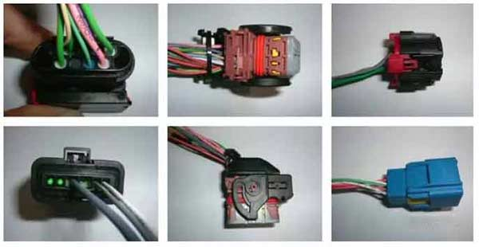
Tapes can be divided into T2, T3, and T4 temperature grades according to their different temperature resistance levels.Types of Automotive Wiring Harness tapes, click here to view, Automotive Wiring Harness tape wrapping techniques, click here to view
Depending on the material of the tape, there are PVC, cotton, polyester, paper tape, etc.
Tape specifications include 9mm, 15mm, 19mm, etc.
Tape comes in many colors, including black, white, green, red, and yellow.
Colored tape is generally used for identification;Paper tape is generally used for folding branches and bandaging;Waterproof tape for gluing hinge points and special uses.
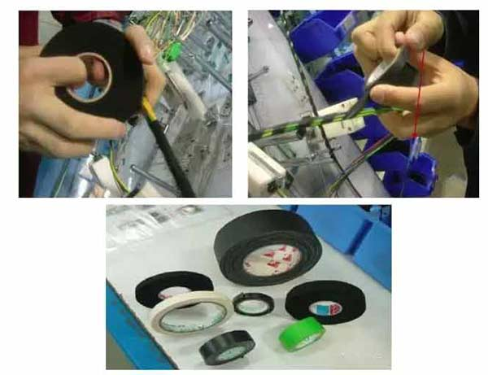
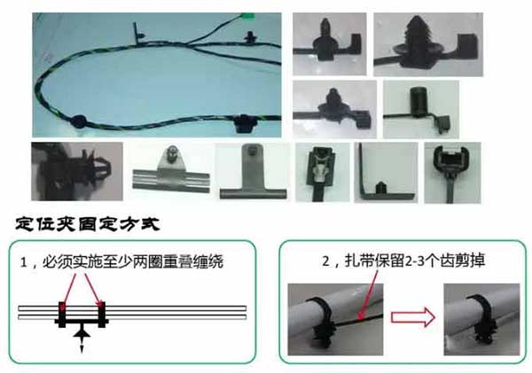
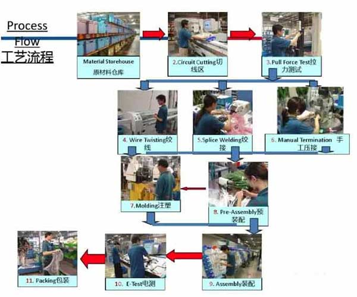
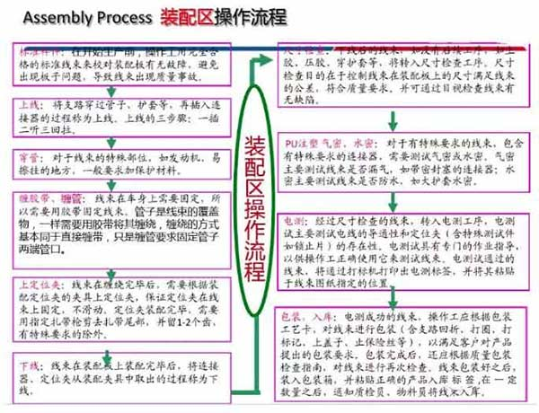
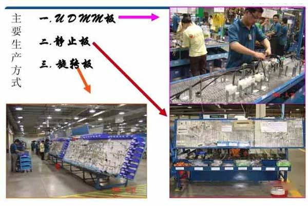
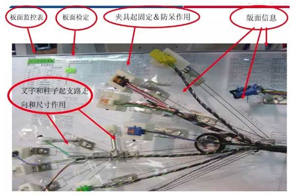
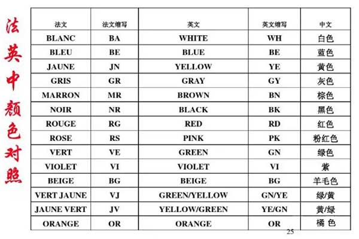
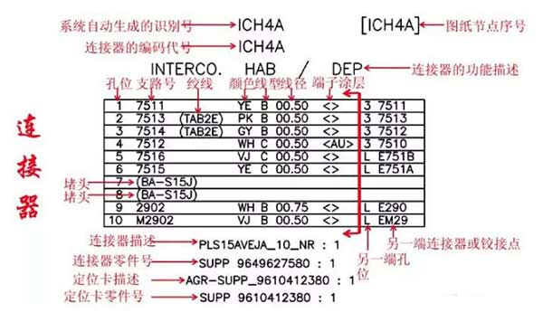
Disclaimer: Copying or reprinting any content on this site is prohibited!